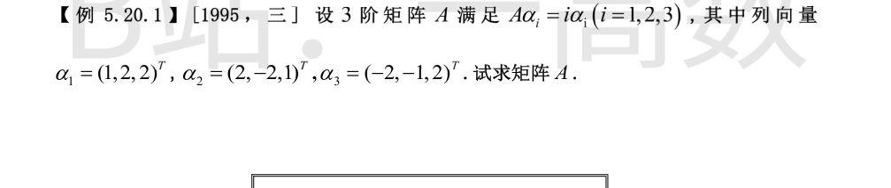
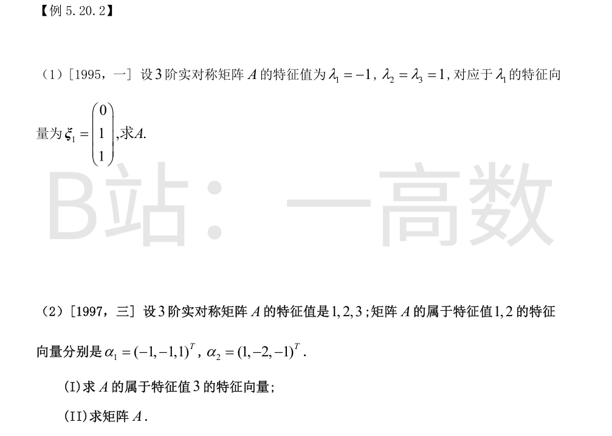

由 Aα_i=iα_i 知 α_1,α_2,α_3 分别是 A 属于特征值 1,2,3 的特征向量。三个特征值互异，故这些特征向量线性无关，且
$$A=P\mathrm{diag}(1,2,3)P^{-1},\quad P=(\alpha_1,\alpha_2,\alpha_3)=\begin{pmatrix}1&2&-2\\2&-2&-1\\2&1&2\end{pmatrix}.$$
验证两两正交：α1·α2=2-4+2=0，α1·α3=-2-2+4=0，α2·α3=-4+2+2=0，且 ‖α1‖²=‖α2‖²=‖α3‖²=9。故 P 的列正交，
$$P^{-1}=\frac{1}{9}P^{T}.$$
于是
$$A=P\mathrm{diag}(1,2,3)P^{T}\cdot\frac{1}{9}=\frac{1}{9}\big(1\cdot\alpha_1\alpha_1^{T}+2\cdot\alpha_2\alpha_2^{T}+3\cdot\alpha_3\alpha_3^{T}\big).$$
逐项计算：α1α1^T=[[1,2,2],[2,4,4],[2,4,4]]，α2α2^T=[[4,-4,2],[-4,8,-4],[2,-4,1]]，α3α3^T=[[4,2,-4],[2,1,-2],[-4,-2,4]]。
加权求和（系数 1,2,3）：
$$A=\frac{1}{9}\begin{pmatrix}1+8+12&2-8+6&2+4-12\\2-8+6&4+16+3&4-8-6\\2+4-12&4-8-6&4+2+12\end{pmatrix}=\frac{1}{9}\begin{pmatrix}21&0&-6\\0&15&-6\\-6&-6&18\end{pmatrix}.$$
验算：Aα1=α1，Aα2=2α2，Aα3=3α3 均成立；tr A=-1+4+2·... 即 7/3+5/3+2=6=1+2+3 ✓。

A 实对称 ⇒ 属于 λ=1 的特征向量与 ξ1 正交，该特征子空间为平面 x_2+x_3=0，取正交基
$$\xi_2=(1,0,0)^{T},\quad \xi_3=(0,1,-1)^{T}.$$
三者已两两正交（ξ2·ξ3=0，且都与 ξ1 正交），单位化后用谱分解：
$$A=-1\cdot\frac{\xi_1\xi_1^{T}}{\|\xi_1\|^2}+1\cdot\xi_2\xi_2^{T}+1\cdot\frac{\xi_3\xi_3^{T}}{\|\xi_3\|^2}.$$
计算：‖ξ1‖²=‖ξ3‖²=2，ξ1ξ1^T=[[0,0,0],[0,1,1],[0,1,1]]，ξ3ξ3^T=[[0,0,0],[0,1,-1],[0,-1,1]]。
$$A=-\frac12\begin{pmatrix}0&0&0\\0&1&1\\0&1&1\end{pmatrix}+\begin{pmatrix}1&0&0\\0&0&0\\0&0&0\end{pmatrix}+\frac12\begin{pmatrix}0&0&0\\0&1&-1\\0&-1&1\end{pmatrix}=\begin{pmatrix}1&0&0\\0&0&-1\\0&-1&0\end{pmatrix}.$$
验算：Aξ1=(0,-1,-1)^T=-ξ1 ✓；tr A=1=-1+1+1 ✓。
(I) A 实对称 ⇒ 属于不同特征值的特征向量正交。设 α3=(x1,x2,x3)^T，则
$$\begin{cases}\alpha_1^{T}x=-x_1-x_2+x_3=0\\\alpha_2^{T}x=x_1-2x_2-x_3=0\end{cases}$$
两式相加得 -3x_2=0 ⇒ x_2=0，代回得 x_1=x_3。故属于特征值 3 的全部特征向量为
$$\alpha_3=k(1,0,1)^{T},\quad k\neq 0.$$
(II) 三个特征向量两两正交，‖α1‖²=3，‖α2‖²=6，‖α3‖²=2。由谱分解
$$A=1\cdot\frac{\alpha_1\alpha_1^{T}}{3}+2\cdot\frac{\alpha_2\alpha_2^{T}}{6}+3\cdot\frac{\alpha_3\alpha_3^{T}}{2}=\frac{\alpha_1\alpha_1^{T}}{3}+\frac{\alpha_2\alpha_2^{T}}{3}+\frac{3\alpha_3\alpha_3^{T}}{2}.$$
α1α1^T=[[1,1,-1],[1,1,-1],[-1,-1,1]]，α2α2^T=[[1,-2,-1],[-2,4,2],[-1,2,1]]，两者之和除以3得 [[2/3,-1/3,-2/3],[-1/3,5/3,1/3],[-2/3,1/3,2/3]]；3α3α3^T/2=[[3/2,0,3/2],[0,0,0],[3/2,0,3/2]]。相加：
$$A=\begin{pmatrix}13/6&-1/3&5/6\\-1/3&5/3&1/3\\5/6&1/3&13/6\end{pmatrix}=\frac{1}{6}\begin{pmatrix}13&-2&5\\-2&10&2\\5&2&13\end{pmatrix}.$$
验算：Aα1=α1，Aα2=2α2，Aα3=3α3 均成立；tr A=13/6+10/6+13/6=6=1+2+3 ✓。